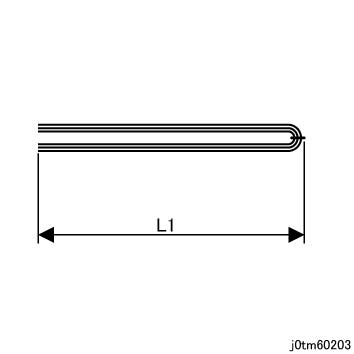
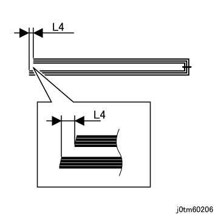
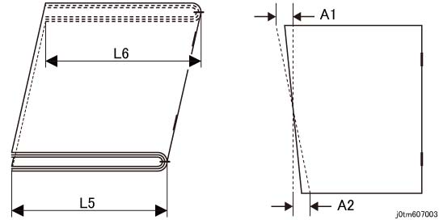
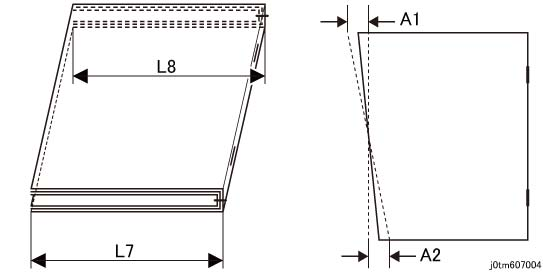
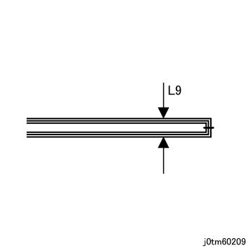

6.2.8.15 SBFT 裁切 (Cutting) Accuracy 
[小册子 裁切 长度 (Specifications 用于 长度 Dispersion at 小册子 裁切)]

The 裁切 长度 可以 adjusted by a user by using the UI.
小册子 + 裁切:

(图 1) tm60203
L1: Finished 长度 (mm) (User-指定的 值)
Setup 范围: (L1-20) mm to (L1-2) mm
测量 位置: 中央 位置 in 底部 纸张 (外部) 方向 in 输出 条件.
当...时 Stapled: L1 +/-2mm (at 95% 设置)
Dispersion 在...之内 the 相同 job: L1 +/- 1 mm
当...时 单面/单个 折叠 (中央 折叠 用于 1 纸张 of 纸张)/Unstapled: L1 +/-2 mm (at 95% 设置)
但是, 此 适用于 one outmost 纸张 仅.
Dispersion 在...之内 the 相同 job: L1 +/- 1.5 mm (用于 157 gsm 和 以下), L1 +/- 1.5mm (用于 以上 157 gsm)
小册子 + 裁切 + 方背:
(图 2) tm60204
L2: Finished 长度 (mm) (User-指定的 值)
Setup 范围: (L2-20) mm to (L2-2) mm
测量 位置: 中央 位置 in 底部 纸张 (外部) 方向 in 输出 条件.
当...时 Stapled: L2 +/-2.5 mm (at 95% 设置)
Dispersion 在...之内 the 相同 job: L2 +/- 1.5 mm
不 guaranteed 当...时 单面/单个 折叠 (中央 折叠 用于 1 纸张 of 纸张)/Unstapled
[小册子 移位 数量]
小册子 + 裁切:
(图 3) tm60205
L3: 移位 数量 (mm) 之间 the 上方 和 下方 parts of a 小册子
The innermost 纸张 of a 小册子 已测量.
测量 位置: 中央 位置 in 小册子 宽度 方向 in 输出 条件.
当...时 Stapled: 单面/单个 折叠 (中央 折叠 用于 1 纸张 of 纸张)/Unstapled: L3 < = +/-1 mm (at 95% 设置)
小册子 + 裁切 + 方背:

(图 4) tm60206
L4: 移位 数量 (mm) 之间 the 上方 和 下方 parts of a 小册子
The innermost 纸张 of a 小册子 已测量.
测量 位置: 中央 位置 in 小册子 宽度 方向 in 输出 条件.
当...时 Stapled: L4 < = +/-1.5 mm (at 95% 设置)
不 guaranteed 当...时 单面/单个 折叠 (中央 折叠 用于 1 纸张 of 纸张)/Unstapled
[小册子 裁切 歪斜 数量]
小册子 + 裁切:

(图 5) tm607003
移位 数量 (mm) 之间 the 两个 sides of 小册子, L5 和 L6
测量 位置: 前面/后面 positions in 底部 纸张 (外部) in 输出 条件.
当...时 Stapled: |L5 - L6| <= 1mm (at 95% 设置)
(当...时 measuring 两个 edges 的 底部 纸张 in an 输出 state, the Dispersion A 的 larger of A1 or A2 in the 相同 job is < = 1mm (at 95% 设置))
当...时 单面/单个 折叠 (中央 折叠 用于 1 纸张 of 纸张)/Unstapled: |L5-L6| <= 1.5mm (at 95% 设置)
(当...时 measuring 两个 edges 的 底部 纸张 in an 输出 state, the Dispersion A 的 larger of A1 or A2 in the 相同 job is < +/-1.5 mm (用于 157 gsm 和 以下), or A < 1 mm (用于 以上 157 gsm) (at 95% 设置))
小册子 + 裁切 + 方背:

(图 6) tm607004
移位 数量 (mm) 之间 the 前面 和 后面 of 小册子, L7 和 L8
测量 位置: 前面/后面 positions in 底部 纸张 (外部) in 输出 条件.
当...时 Stapled: |L7 - L8| <= 1.5mm (at 95% 设置)
(当...时 measuring 两个 edges 的 底部 纸张 in an 输出 state, the Dispersion A 的 larger of A1 or A2 in the 相同 job is < = 1mm (at 95% 设置))
不 guaranteed 当...时 单面/单个 折叠 (中央 折叠 用于 1 纸张 of 纸张)/Unstapled
[小册子 Swell 数量]
小册子 swell 数量 可以 adjusted by switching strength of 方背 模式.
小册子 + 方背:

(图 7) tm60209
If 那里 is 编号 方背, the 小册子 单元 rules 涂抹/施加.
L9: Swell 数量 (mm) at 前面/后面 of 小册子
测量 位置: 测量 higher swell 之间 前面 和 后面 immediately 在...之后 输出. 但是, the gap 由于 卷曲 at Trail 边缘 of 小册子 is excluded.
当...时 Stapled: L9 < = 20 mm (at 95% 设置)
当...时 单面/单个 折叠 (中央 折叠 用于 1 纸张 of 纸张)/Unstapled, the performance of 小册子 装订器 (装订器 D6 (小册子制作器)) applies.